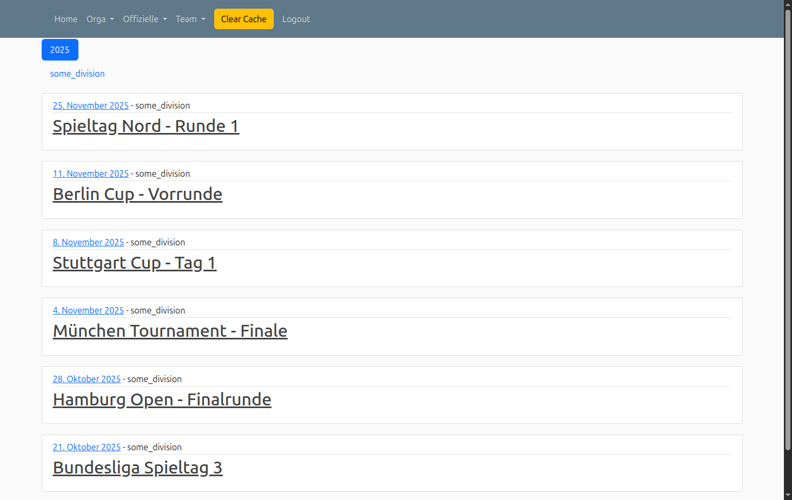
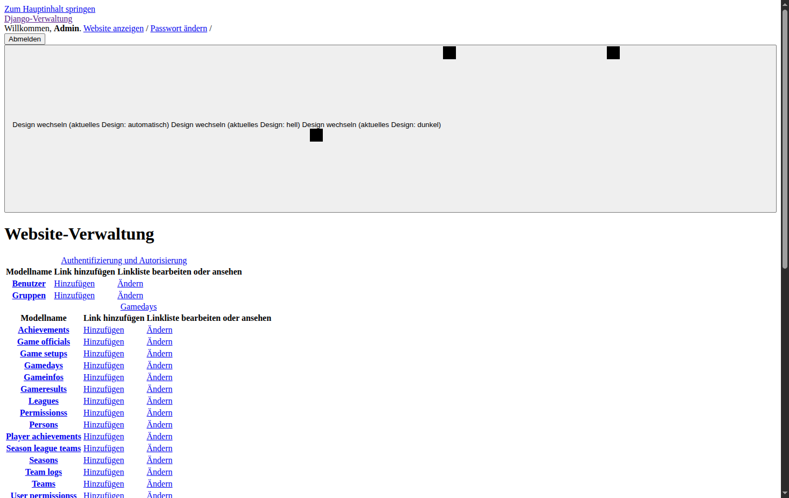
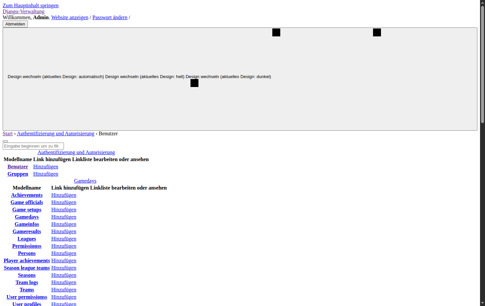
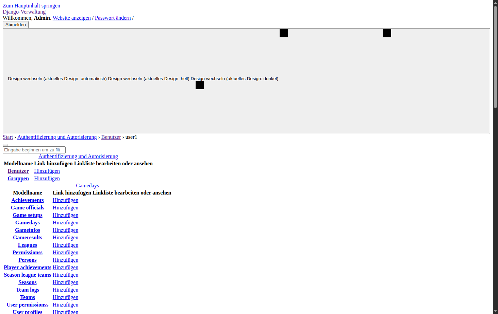
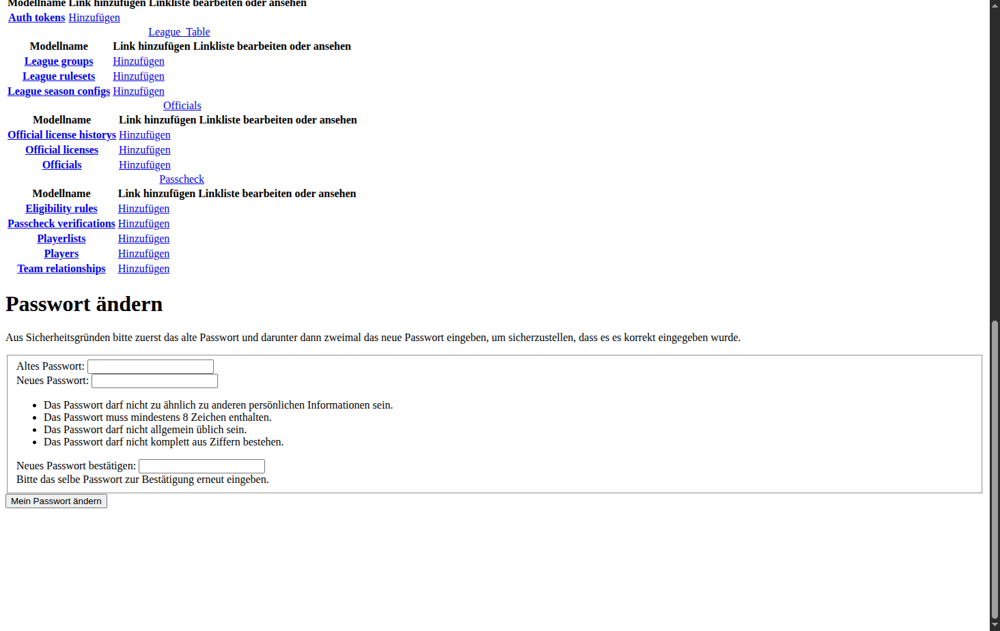

Benutzerkonten
Einführung
Die Benutzerkontenverwaltung in LeagueSphere ermöglicht es Administratoren, Benutzerkonten zu erstellen, zu verwalten und Zugriffsrechte zu steuern. Über das Django-Administrations-Backend können Sie Benutzer hinzufügen, deren persönliche Daten bearbeiten, Berechtigungen zuweisen und Passwörter verwalten.
Anmeldung
Um auf LeagueSphere zuzugreifen, müssen Sie sich zunächst mit Ihrem Benutzernamen und Passwort anmelden.
So melden Sie sich an:
- Rufen Sie die LeagueSphere-Startseite auf
- Klicken Sie auf den Link "Login" in der oberen Navigationsleiste
- Geben Sie Ihren Benutzernamen ein
- Geben Sie Ihr Passwort ein
- Klicken Sie auf "Login"

Nach erfolgreicher Anmeldung werden Sie zur Startseite weitergeleitet. In der Navigationsleiste sehen Sie nun zusätzliche Menüoptionen, die Ihren Berechtigungen entsprechen.

Admin-Backend aufrufen
Das Django-Administrations-Backend ist die zentrale Anlaufstelle für die Verwaltung von Benutzerkonten und anderen Systemeinstellungen.
Zugriff auf das Admin-Backend:
- Melden Sie sich mit einem Administrator-Konto an
- Klicken Sie in der Navigationsleiste auf "Orga"
- Wählen Sie im Dropdown-Menü "Backend" aus
Sie gelangen zum Admin-Dashboard, das Ihnen einen Überblick über alle verwaltbaren Bereiche des Systems bietet.

Benutzerliste anzeigen
Die Benutzerliste zeigt Ihnen alle registrierten Benutzer des Systems mit ihren wichtigsten Eigenschaften.
So öffnen Sie die Benutzerliste:
- Öffnen Sie das Admin-Backend (siehe oben)
- Suchen Sie den Bereich "Authentifizierung und Autorisierung"
- Klicken Sie auf "Ändern" neben "Benutzer"

Informationen in der Benutzerliste:
- Benutzername: Eindeutiger Anmeldename des Benutzers
- E-Mail-Adresse: Kontakt-E-Mail des Benutzers
- Vorname: Vorname des Benutzers
- Nachname: Nachname des Benutzers
- Mitarbeiter-Status: Zeigt an, ob der Benutzer auf das Admin-Backend zugreifen darf
Benutzerliste filtern:
Über die Filteroptionen auf der rechten Seite können Sie die Anzeige einschränken:
- Nach Mitarbeiter-Status: Nur Mitarbeiter oder Nicht-Mitarbeiter anzeigen
- Nach Administrator-Status: Nur Administratoren oder normale Benutzer anzeigen
- Nach Aktiv: Nur aktive oder deaktivierte Konten anzeigen
Benutzer bearbeiten
Durch Klicken auf einen Benutzernamen in der Liste gelangen Sie zur Detailansicht, wo Sie alle Eigenschaften des Kontos bearbeiten können.

Persönliche Informationen:
- Benutzername: Eindeutiger Anmeldename (maximal 150 Zeichen, nur Buchstaben, Ziffern und @/./+/-/_)
- Vorname: Vorname des Benutzers
- Nachname: Nachname des Benutzers
- E-Mail-Adresse: Kontakt-E-Mail-Adresse
Berechtigungen:
- Aktiv: Legt fest, ob der Benutzer sich anmelden kann. Deaktivieren Sie diese Option anstatt das Konto zu löschen, wenn ein Benutzer vorübergehend keinen Zugriff haben soll
- Mitarbeiter-Status: Erlaubt dem Benutzer den Zugriff auf das Admin-Backend
- Administrator-Status: Gibt dem Benutzer alle Berechtigungen ohne diese einzeln zuweisen zu müssen
Gruppen und spezifische Berechtigungen:
Sie können Benutzer zu Gruppen hinzufügen oder ihnen spezifische Berechtigungen zuweisen:
- Gruppen: Weisen Sie den Benutzer zu einer oder mehreren Gruppen zu. Der Benutzer erhält automatisch alle Berechtigungen dieser Gruppen
- Berechtigungen: Weisen Sie spezifische Berechtigungen für einzelne Funktionen zu (z.B. "Can add gameday", "Can change team")
Änderungen speichern:
Nach der Bearbeitung haben Sie folgende Optionen:
- Sichern: Speichert die Änderungen und kehrt zur Benutzerliste zurück
- Sichern und neu hinzufügen: Speichert die Änderungen und öffnet ein leeres Formular für einen neuen Benutzer
- Sichern und weiter bearbeiten: Speichert die Änderungen und bleibt im Bearbeitungsmodus
- Löschen: Löscht das Benutzerkonto unwiderruflich (verwenden Sie stattdessen bevorzugt die "Aktiv"-Option zum Deaktivieren)
Passwort verwalten
LeagueSphere bietet verschiedene Möglichkeiten zur Passwortverwaltung für Administratoren und Benutzer.
Eigenes Passwort ändern:
Als angemeldeter Benutzer können Sie Ihr eigenes Passwort jederzeit ändern:
- Öffnen Sie das Admin-Backend
- Klicken Sie in der oberen rechten Ecke auf "Passwort ändern"
- Geben Sie Ihr aktuelles Passwort ein
- Geben Sie zweimal das neue Passwort ein
- Klicken Sie auf "Mein Passwort ändern"

Passwortanforderungen:
Aus Sicherheitsgründen müssen Passwörter folgende Anforderungen erfüllen:
- Mindestens 8 Zeichen lang
- Darf nicht zu ähnlich zu anderen persönlichen Informationen sein
- Darf nicht allgemein üblich sein (z.B. "password123")
- Darf nicht komplett aus Ziffern bestehen
Passwort für anderen Benutzer setzen (Administratoren):
Als Administrator können Sie Passwörter für andere Benutzer zurücksetzen:
- Öffnen Sie die Benutzerdetails des gewünschten Benutzers
- Klicken Sie neben dem Passwortfeld auf "Passwort setzen"
- Geben Sie zweimal das neue Passwort ein
- Klicken Sie auf "Passwort ändern"
Neuen Benutzer anlegen
Als Administrator können Sie neue Benutzerkonten für Ihr Team erstellen.
So legen Sie einen neuen Benutzer an:
- Öffnen Sie die Benutzerliste im Admin-Backend
- Klicken Sie rechts oben auf "Benutzer hinzufügen"
- Geben Sie einen eindeutigen Benutzernamen ein
- Legen Sie ein Passwort fest (zweimal zur Bestätigung)
- Klicken Sie auf "Sichern und weiter bearbeiten"
- Füllen Sie die persönlichen Informationen aus (Vorname, Nachname, E-Mail)
- Legen Sie die Berechtigungen fest (Aktiv, Mitarbeiter-Status, etc.)
- Weisen Sie bei Bedarf Gruppen oder spezifische Berechtigungen zu
- Klicken Sie auf "Sichern"
Tipps und Best Practices
Sicherheit:
- Vergeben Sie Administrator-Rechte nur an vertrauenswürdige Personen
- Verwenden Sie starke Passwörter mit einer Kombination aus Buchstaben, Zahlen und Sonderzeichen
- Deaktivieren Sie Konten, die nicht mehr benötigt werden, anstatt sie zu löschen
- Überprüfen Sie regelmäßig die Liste der aktiven Benutzer und deren Berechtigungen
- Verwenden Sie Gruppen für die Rechtevergabe, um die Verwaltung zu vereinfachen
Verwaltung:
- Nutzen Sie aussagekräftige Benutzernamen (z.B. vorname.nachname)
- Pflegen Sie die E-Mail-Adressen, um Benutzer bei Bedarf kontaktieren zu können
- Dokumentieren Sie, welche Berechtigungen für welche Rollen benötigt werden
- Erstellen Sie Benutzergruppen für häufig verwendete Berechtigungssätze (z.B. "Spieltagsverwalter", "Schiedsrichter")
Fehlerbehebung:
- Benutzer kann sich nicht anmelden: Prüfen Sie, ob das Konto aktiv ist
- Benutzer sieht keine Menüoptionen: Überprüfen Sie die Berechtigungen und den Mitarbeiter-Status
- Passwort wird nicht akzeptiert: Stellen Sie sicher, dass alle Passwortanforderungen erfüllt sind
- Benutzer kann Backend nicht öffnen: Aktivieren Sie den Mitarbeiter-Status für diesen Benutzer